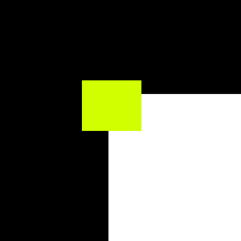
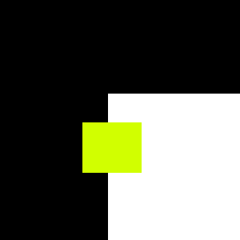

Affine region detectors
What is being detected?
Affine region is basically any region of the image that is stable under affine transformations. It can be edges under affinity conditions, corners (small patch of an image) or any other stable features.
Available detectors
At the moment, the following detectors are implemented
-
Harris detector
-
Hessian detector
Algorithm steps
Harris and Hessian
Both are derived from a concept called Moravec window. Let’s have a look at the image below:

As can be noticed, moving the yellow window in any direction will cause very big change in intensity. Now, let’s have a look at the edge case:

In this case, intensity change will happen only when moving in particular direction.
This is the key concept in understanding how the two corner detectors work.
The algorithms have the same structure:
-
Compute image derivatives
-
Compute weighted sum
-
Compute response
-
Threshold (optional)
Harris and Hessian differ in what derivatives they compute. Harris computes the following derivatives:
HarrisMatrix = [(dx)^2, dxdy], [dxdy, (dy)^2]
(note that d(x^2) and (dy^2) are numerical powers, not gradient again).
The three distinct terms of a matrix can be separated into three images, to simplify implementation. Hessian, on the other hand, computes second order derivatives:
HessianMatrix = [dxdx, dxdy][dxdy, dydy]
Weighted sum is the same for both. Usually Gaussian blur
matrix is used as weights, because corners should have hill like
curvature in gradients, and other weights might be noisy.
Basically overlay weights matrix over a corner, compute sum of
s[i,j]=image[x + i, y + j] * weights[i, j] for i, j
from zero to weight matrix dimensions, then move the window
and compute again until all of the image is covered.
Response computation is a matter of choice. Given the general form of both matrices above
[a, b][c, d]
One of the response functions is
response = det - k * trace^2 = a * c - b * d - k * (a + d)^2
k is called discrimination constant. Usual values are 0.04 -
0.06.
The other is simply determinant
response = det = a * c - b * d
Thresholding is optional, but without it the result will be
extremely noisy. For complex images, like the ones of outdoors, for
Harris it will be in order of 100000000 and for Hessian will be in order
of 10000. For simpler images values in order of 100s and 1000s should be
enough. The numbers assume uint8_t gray image.
To get a deeper explanation please refer to the following papers: